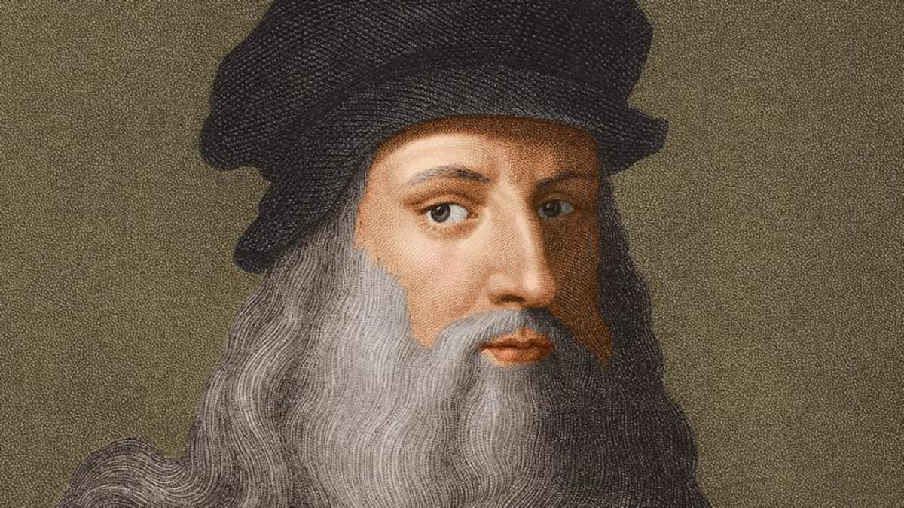

Leonardo da Vinci
The one and only Leonardo da Vinci was one of the greatest masters of the Renaissance. He was famous for being a painter, sculptor, architect, engineer, musician, inventor, and scientist. Perhaps no other man has been gifted in as many different ways as he was.
Leonardo was born in the small town of Vinci, Tuscany. He was the son of a Florentine notary and a peasant girl. In the mid-1460’s Leonardo and his parents moved to Florence. There he was given the best education that Florence could possibly offer. He advanced both socially and intellectually. Leonardo’s extreme artistic talent took him to Verrocchios’ workshop in 1466. It was there that he met Botticelli and Ghirlandaio. While Leonardo was working along side Verrocchio he learned many new things: painting altarpieces, panel pictures, and making large sculptural objects in marble and bronze.
In 1478 Leonardo became an independent master painter. His first large painting, The Adoration of the Magi, was started in 1481 and left unfinished. He did many more paintings and sculptures, but most were never completed.
In 1482 Leonardo went to the court of Ludovico Sforza in Milan. He was able to come there because he had wrote a letter to the Duke saying that he knew how to make portable bridges and was also skilled in many other techniques of making war machines.
Leonardo’s most important personal painting which he did while he was in Milan was The Virgin of the Rocks. He worked on the composition for a long time, but again, he didn’t finish his work. Also from 1495 to 1497 he worked extremely hard on his masterpiece, The Last Supper.
While Leonardo stayed in Milan he made many more paintings; theater designs, architectural drawings, and even a model for the dome of the Milan Cathedral. His largest piece of work was the colossal bronze monument to Francesco Sforza. But when the Sforza family was chased out of Milan by French forces, the statue was left unfinished and ended up getting destroyed by French archers who used it for target practice.
In 1503, Leonardo was a member of a group of artists who would decide where the marble statue called The David would be located. The statue was done by Florentine Sculptor, Michelangelo. Near the end of 1503 Leonardo began to think of a decoration for the great hall of the Palazzo Vecchio. He was to paint the Battle of Anghiari, which was a Florentine victory in its war with Pisa. Leonardo made many ideas and sketches, but once again he never actually finished the wall painting. During his stay in Florence, Leonardo painted many more portraits, but only one survives still today. That is the famous Mona Lisa. He painted this sometime between 1503 and 1506. This is painting is probably the most famous painting in all history. Leonardo must have had some affection for the portrait because he took it with him wherever he went.
Leonardo traveled back to Milan by request of King Louis XII, as an architect and engineer. There he continued his research in geology, botany, hydraulics, and mechanics. He also painted St. Anne, Mary, and the Child, and St. John the Baptist in 1513. In 1515 Leonardo got an invitation from Francis I of France to see if he wanted to live in the castle of Cloux. He accepted and kept on doing his scientific researches until his death. Leonardo da Vinci’s creativity, his originality expressed in his notebooks, drawings and paintings prove that he truly is one of the greatest minds of all time.